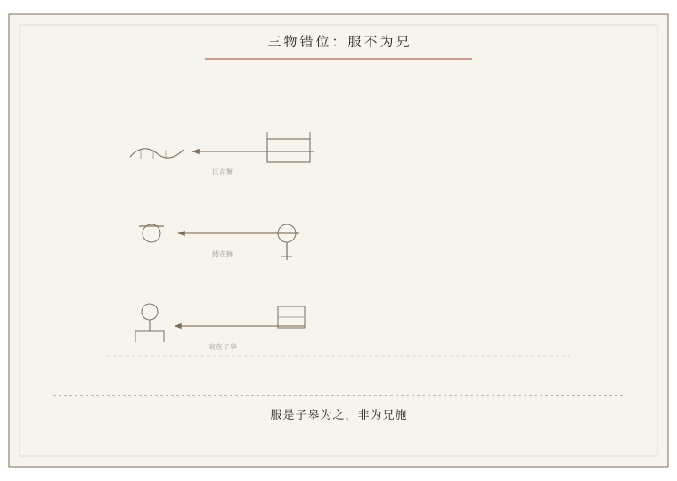

檀弓下 · 四·八十九 · 第 414 课
成人有其兄死而不为衰者，闻子皋将为成宰，遂为衰。成人曰：「蚕则绩而蟹有匡，范则冠而蝉有緌，兄则死而子皋为之衰。」
说什么事：成邑有个人，兄死而不为兄服衰。听说子皋将来做成邑之宰，就赶制了衰服。成邑人讥之曰：「蚕要绩丝，却有蟹背着筐；蜂要有冠，却是蝉长着緌；哥哥死了，倒是子皋替他穿的衰。」
落在哪一层：以「服之理由被人换掉」为界。形式全对，理由全错。
为何编在此位：上是「改服以随俗」，此是「改服以避罪」。两改都不是为亲。
【经】成人有其兄死而不为衰者，闻子皋将为成宰，遂为衰。成人曰：「蚕则绩而蟹有匡，范则冠而蝉有緌，兄则死而子皋为之衰。」
【注】蚩兄死者。／言其衰之不为兄死，如蟹有匡、蝉有緌，不为蚕之绩、范之冠也。范，蜂也。蝉，蜩也。緌为蜩喙，长在腹下。／成，孟氏所食采地也。子皋，孔子弟子，性至孝。
【疏】此一节论成人无礼之事。○成，孟氏所食采地也，即前犯禾之邑也。此邑中民，有兄死而弟不为兄制服者也。○「闻子皋将为成宰，遂为衰」者，此不服兄者，闻孔子弟子子皋，其性至孝，来为成之宰，必当治前不孝之人，恐罪及己，故惧之，遂制衰服也。○「蚕则绩而蟹有匡」者，「成人」谓成邑中识礼之人也，讥笑不服兄衰，仍为设二譬也。蚕则绩丝作茧，「蟹有匡」者，蟹背壳似匡，仍谓蟹背作匡。○「范则冠而蝉有緌」者，范，蜂也。蜂头上有物似冠也。蝉，蜩也。緌谓蝉喙，长在口下，似冠之緌也。○「兄则死而子皋为之衰」者，以是合譬也。蚕则须匡以贮茧，而今无匡，蟹背有匡，匡自著蟹，则非为蚕设。蜂冠无緌，而蝉口有緌，緌自著蝉，非为蜂设。亦如成人兄死，初不作衰，后畏於子皋，方为制服。服是子皋为之，非为兄施，亦如蟹匡、蝉緌各不关于蚕、蜂也。
成人 成邑之人。注云「成，孟氏所食采地」。
为其兄死 为兄服衰。「为」，于伪反。
子皋 孔子弟子，性至孝。疏云「必当治前不孝之人」。
成宰 成邑之宰。
蚕则绩 蚕绩丝作茧。
蟹有匡 匡，筐也。蟹背壳似筐。
范 注云「范，蜂也」。
緌 注云「緌为蜩喙，长在腹下」，似冠之緌。
为之衰 「之」指子皋，非指兄。
成邑有人兄死而不为兄服衰，听说子皋将做成邑之宰，就赶制了衰服。成邑人说：「蚕要绩丝，筐却在蟹背上；蜂要有冠，緌却长在蝉口下；哥哥死了，衰倒是为子皋穿的。」
此章三句，前二句是譬，第三句是断。
两个「错位」——匡不属蚕，緌不属蜂。
第三个错位——衰不属兄。
第一层 「不为衰」之罪 兄死当服齐衰期。此人不为。
疏云「此邑中民，有兄死而弟不为兄制服者也」。 一句事实，无曲折。
第二层 他为何忽然为衰 「闻子皋将为成宰」。
不是闻兄死而哀，是闻宰至而惧。 疏云「恐罪及己，故惧之」。
第三层 子皋何许人 注云「孔子弟子，性至孝」。
一个以孝闻名的人来做宰，本身就是一部活的礼书。 不待发令，人自改服。
第四层 三譬之妙 蚕绩而蟹有匡、范冠而蝉有緌——皆「应有而在他物」。
物各有其当然，而所得者常在别人身上。 此喻极准：形式落错了人。
第五层 「兄则死而子皋为之衰」 一字之换，「为」的宾语由兄变成子皋。
同一件衰，理由换了人，便成了一件道具。 疏云「服是子皋为之，非为兄施」。
第六层 「成人」是谁 疏云「成人谓成邑中识礼之人也」。
讥者不是外人，是同邑之人。 同邑之人识其伪，则伪者无所遁。
第七层 此章之分寸 礼之形式与礼之理由，两不可分。
分则形式可买。 畏罪而服，是买；畏讥而止，也是买。
与今日何干 今之合规、今之表态，多有为「检查要来」而作者。
此章给一句：为谁来，比做了什么更能说明这件事。
| 左 | 右 |
|---|---|
| 成人有兄死 | 当服齐衰 |
| 不为衰 | 无哀 |
| 闻子皋为宰 | 惧罪 |
| 遂为衰 | 服在而理由亡 |
| 蚕则绩 | 需匡 |
| 蟹有匡 | 匡自著蟹 |
| 范则冠 | 需緌 |
| 蝉有緌 | 緌自著蝉 |
| 兄死而子皋为之衰 | 衰自著子皋 |
画一幅极简的邑中场景，视点平视。画面中部一条水平地面线。左侧立一男子，身形粗壮，肩上扛着一件叠好的麻衣（衰服）；他身后远景画一座小城门，门内站一个身形清瘦的人影，仅一根竖线加一个圆头。画面右侧画一个侧身的老者，举一只手向前指，姿态在说话。地面线上另画一条细细的虚线，从男子脚下的麻衣斜向左边的城门。不画文字。赭色只用在麻衣的边线上。
